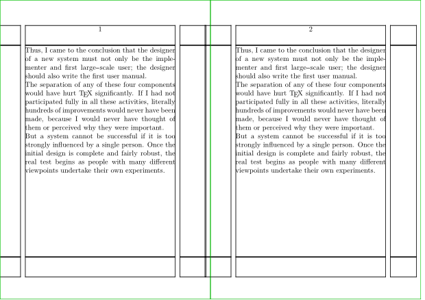

Syntax (autogenerated)
| \setuparranging[...,...] | |
| [...,...] | disable mirrored doublesided negative 90 180 270 reset background normal 2*16 2*8 2*4 2*2 2**2 2SIDE 2TOP 2UP 2DOWN 2*4*2 2*2*4 2TOPSIDE 2*8*Z 2*6*Z 1*8 1*4 3SIDE TRYPTICHON ZFLYER-8 ZFLYER-10 ZFLYER-12 MAPFLYER-12 DOUBLEWINDOW 1*2-Conference 1*4-Conference 2*2*2 2*2*3 XY name |
Description
Setup the way you wish to arrange (impose) multiple pages per sheet, in order to create e.g. book signatures. For a description of the various options, see Imposition.
Example
-
\setuppapersize[A8][A7,landscape] \setuparranging[2SIDE] \showframe \setupbodyfont[5pt] \starttext \dorecurse{2}{\input knuth \page[yes]} \stoptext
results in
- 
See also
Help from ConTeXt-Mailinglist/Forum
All issues with: